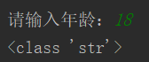
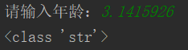
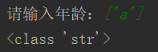
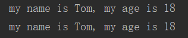
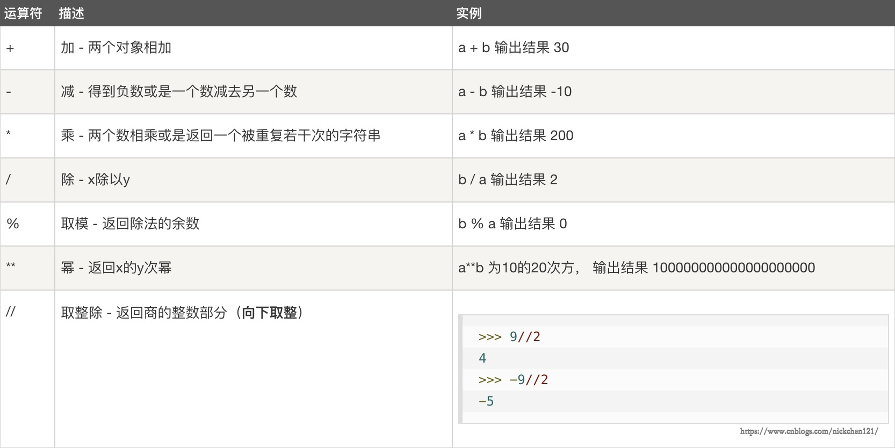
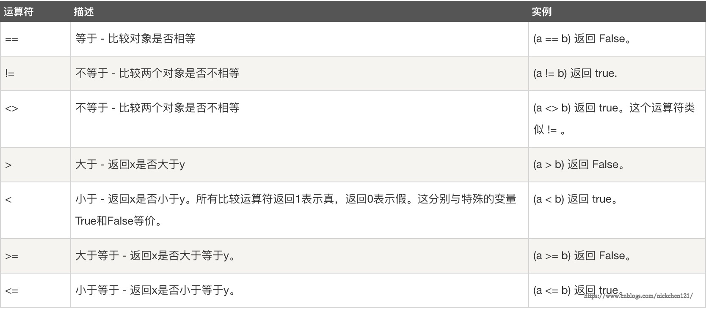
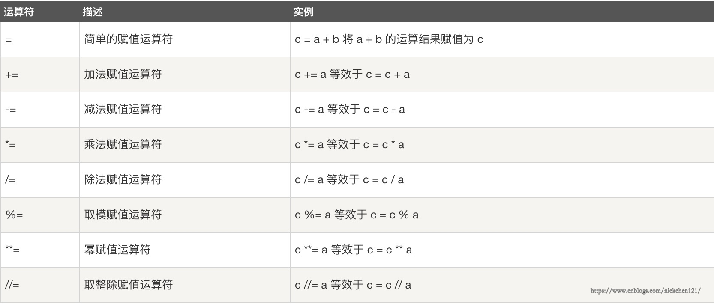

原文连接:https://www.cnblogs.com/aheng/p/11782459.html
引子
上一篇我们主要了解到了python这门编程语言，今天来说一下关于用户交互，数据类型和运算符方面的学习内容
用户交互
什么是用户交互？
用户交互就是人往计算机里输入数据（input）,计算机输出结果（print）
很简单一个例子，我们在pycharm中输入以下代码
age = input("请输入年龄：") #往计算机中输入数据
print(type(age)) #让计算机输出age的数据类型这时，计算机就会接收用户输入，其实无论输入什么类型的数据，最终返回的一定是字符串（str）



PS：python2中input一定要声明你输入的类型，python2中的raw_input与python3中的input一样
格式化输出
把一段字符串里面的某些内容替换掉之后再输出，就是格式化输出。
如何格式化输出？
1、占位符，如：%s、%d：
# %s占位符：可以接收任意类型的值
# %d占位符：只能接收数字，如果不是数字就会报错
print('亲爱的%s你好！你报名的%s月课程已成功，学费是%d' % ('Tom', 10, 18000))输出结果为：

2、format
废话不多说，直接举例说明：
# .fomat的用法
name = 'Tom'
age = '18'
print("my name is {}, my age is {}".format(name, age))
#也可以用下列方法
print("my name is {name}, my age is {age}".format(name=name, age=age))输出结果都是

3、f-string（这个只有是python3.6版本后才会有的）
# f-string的用法
name = 'Tom'
age = '18'
print(f" my name is {name}, my age is {age}")
数据类型
1、整型 int （可定义：电话，身份证号 ‘X除外’ ，年龄）
PS：长整型long:只有python 2 中有长整型，long范围是-2147483647 到 2147483647，即为-2^31到2^31-1
age = 18 # age=int(18)
print(id(age))
print(type(age))
print(age)140718798304048
<class 'int'>
18
2、浮点型 folt (可定义体重，身高，薪资)
salary = 2.1 # salary=float(2.1)
print(id(salary))
print(type(salary))
print(salary)2035028452208
<class 'float'>
2.1
3、字符串 str (可定义爱好，个人简介)
name1 = 'Tom'
name2 = "Sam"
print(id(name1))
print(type(name1))
print(name1)1398355144944
<class 'str'>
Tom
PS：这里提一下
python 2 中的str本质其实是一个拥有8个bit位的序列
python 3 中的str本质其实是一个unicode序列
字符串引号使用没有区别（单引，双引，三引号都可以），但是不能混用
如果字符串中需要有引号，就必须使用嵌套
字符串拼接就是开辟了一个新空间，存入数据
4、列表 list (存一个或多个不同类型的值)
在[]内用逗号分隔开任意类型的值。
hobby = 'read'
hobby_list = [hobby, 'run', 'girl']
print(id(hobby_list))
print(type(hobby_list))
print(hobby_list)2855587238472
<class 'list'>
['read', 'run', 'girl']
存不是目的，取才是目的，我们介绍列表索引取值的方法，牢记索引序号从0开始。
hobby_list = ['read', 'run', 'girl']
# 索引序号 0 1 2
# 取出第二个爱好
print(hobby_list[1])run
hobby_list = ['read', 'run', ['girl_name', 18, 'shanghai']]
# 取出girl的年龄
print(hobby_list[2][1])18
5、字典 dict
作用
用来存取多个值，按照key：value的方式存值，取的时候可以通过key而非索引去取值，key对value具有描述性的作用。存放数据的种类各种各样并且数据较多的时候可以使用字典。
用法
在{}内用逗号分隔开多个元素，每一个元素都是key: value的格式，其中value是任意格式的数据类型，key由于具有描述性的作用，所以key通常是字符串类型。
# 字典套列表
user_info = {'name': 'Tom', 'gender': 'male', 'age': 20,
'company_info': ['oldboy', 'shanghai', 50]}
print(user_info['name'])
print(user_info['company_info'][0])Tom
oldboy
# 字典套字典
user_info = {'name': 'Tom', 'gender': 'male', 'age': 20, 'company_info': {
'c_name': 'oldboy', 'c_addr': 'shanghai', 'c_num_of_employee': 50}}
print(user_info['name'])
print(user_info['company_info']['c_name'])Tom
oldboy
6、布尔类型 bool
主要用于判断事物的对错，只有两个值：Ture和False ，一般布尔类型不会单独定义
# 布尔类型
a = 1
b = 1
print(a == b) # == 比较的是value
print(a is b) # is 比较的的是idTrue
True
PS：值相等的情况下，id不一定相同
id相同，之一定相同
运算符
算术运算符
# 算术运算符
print(1 + 2) # 加
print(1 - 2) # 减
print(1 * 2) # 乘
print(1 / 2) # 除
print(10 // 3) # 整除，只取整数
print(10 % 3) # 取模
print(10**3) # 次幂输出结果：
3
-1
2
0.5
3
1
1000

比较运算符
# 比较运算符
a = 10
b = 20
print(a == b) # 判断相等
print(a != b) # 判断不等于
print(a > b) # 判断大于
print(a >= b) # 判断大于等于
print(a < b) # 判断小于
print(a <= b) # 判断小于等于输出结果：
False
True
False
False
True
True

赋值运算符
age = 19
age = age + 1
print(age)20
age = 19
age += 1 #加等于
print(age)20
age = 19
age *= 10 #乘等于
print(age)190

链式赋值
# 链式赋值
x = 1
y = 1
z = 1
x = y = z
print(x, y, z)1 1 1
交叉赋值
# 交叉赋值
a = 1
b = 2
print(a, b)
a, b = b, a
print(a, b)1 2
2 1
解压赋值
# 解压赋值
l1 = [1, 2, 3, 4]
l2 = [1, 2, 3, 4, 5, 6]
a, b, c, d = l1
print(a, b, c, d) # 这时如果打印l2会报错
# *_ 可以接受溢出的元素
a, b, c, d, *_ = l2
print(a, b, c, d, *_)
print(*_, a, b, c, d)1 2 3 4
1 2 3 4 5 6
5 6 1 2 3 4
逻辑运算符
and:有一个返回False，整条式子都为False
or:有一个返回Ture，整条式子都为Ture
not:非真（取反）
# 逻辑运算符
print(10 < 20 and 20 > 30 and 30 < 40) # 有一个返回False，整条式子都为False
print(10 > 20 or 20 > 30 or 30 < 40) # 有一个返回Ture，整条式子都为TureFalse
True